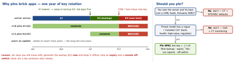

networking · folio
In one line: Pinning adds an app-level rule on top of normal validation: the verified chain must contain a public key you chose (its SPKI hash). It stops a mis-issued, compelled or user/MDM-installed CA from intercepting you — and turns any unplanned key change into an outage only an app update fixes. Android calls it “not recommended”, Apple “not required”; CT and CAA now cover most of the mis-issuance risk. Pin only when the threat model demands it, and then with backups.
Download PDF Print view LaTeX source


How it works
- What is hashed: the certificate’s SubjectPublicKeyInfo (DER: algorithm OID + key) → SHA-256 → base64. A key pin survives renewal if the key is reused (e.g. certbot
--reuse-key); a certificate pin dies at every renewal. - When: after the OS validated chain, name and dates. A pin only narrows trust — Apple: “can only tighten” it.
- Match: passes if any one pinned key is found — Android/OkHttp: anywhere in the chain; Apple: in the leaf (LeafIdentities) or a CA cert (CAIdentities). That is why a backup pin works.
- Which key: your leaf key (you control rotation) or your private CA. Not a public intermediate — Let’s Encrypt issues from several (R10–R14, E5–E9) and rotates them on purpose to discourage pinning. Root: survives most things, protects little.
- Shorter cert lives (200 → 47 days by 2029) mean more rotations — more chances to brick.
Implementations
NSPinnedDomains | iOS 14+, Info.plist, no code; NSPinnedLeafIdentities / NSPinnedCAIdentities;
NSIncludesSubdomains = one level only |
URLSessionDelegate | trust challenge: SecTrustEvaluateWithError first, then hash the chain’s keys; full
control (per-request, remote pin lists) |
| TrustKit | iOS 12+: pins, expiry, failure reports to a URL, optional swizzling |
| Android NSC | <pin-set expiration> (API 24+); expired → pinning off (fails open) |
| OkHttp | CertificatePinner "sha256/…" — also what RN libraries wrap |
Example — the same policy, both platforms
<!-- res/xml/network_security_config.xml -->
<domain-config>
<domain includeSubdomains="true">api.example.com</domain>
<pin-set expiration="2027-06-30">
<pin digest="SHA-256">LIVE_KEY_BASE64=</pin>
<pin digest="SHA-256">OFFLINE_BACKUP_BASE64=</pin>
</pin-set>
</domain-config>
Info.plist > NSAppTransportSecurity > NSPinnedDomains
api.example.com > NSPinnedLeafIdentities = [
{ SPKI-SHA256-BASE64 = LIVE_KEY_BASE64= },
{ SPKI-SHA256-BASE64 = OFFLINE_BACKUP_BASE64= } ]openssl x509 -in leaf.pem -pubkey -noout | openssl pkey -pubin \
-outform der | openssl dgst -sha256 -binary | base64What the platforms say (2026)
- Android: pinning “is not recommended for Android apps” — a CA change strands every installed version. If you must: multiple backup pins, one key fully yours, a short expiration.
- Apple: “Pinning certificates is not required…only if absolutely necessary”; several keys per domain, plan recovery.
- Browsers gave up first: HPKP (RFC 7469) left Chrome in 2019(unverified).
Certificate Transparency and CAA — the alternatives
CT (RFC 6962): CAs log every public cert in append-only Merkle-tree logs and embed the SCTs (signed promises of inclusion). Clients refuse unlogged certs: Apple since certs issued after 15 Oct 2018 (all apps, not only Safari); Android 16 opt-in <certificateTransparency enabled="true"/>, default from Android 17. Owners watch the logs (crt.sh, alerts) → a rogue cert for your name is seen. CT is detective; pinning is preventive. CAA (RFC 8659): DNS example.com CAA 0 issue "letsencrypt.org" (+ issuewild, iodef); every public CA must check it before issuing. Stops honest CAs, not a compromised one.
Still justified when…
You control server and key custody, and the attacker can plausibly install a CA or coerce one: banking, payments, health, gov, enterprise apps on managed devices, or a regulator/pentest requirement (OWASP MASVS-NETWORK-2(unverified)). Not for: CDN/third-party hosts, web content, “stopping reverse engineering”.
Traps
- “Pinning stops API reverse engineering” — a jailbroken/rooted phone with Frida or a kill-switch tweak disables it in minutes. It protects the user from a MITM, not your API from the user.
- Pin check instead of default evaluation: expired or wrong-host certs pass.
- Android
expirationfails open; an off-switch fetched over the pinned channel cannot turn itself off — fetch it elsewhere. - Pinning the leaf certificate (not key) with 90-day certs: planned outages.
- Debug proxies (Charles, Proxyman) need the CA in
debug-overrides— debuggable builds only.